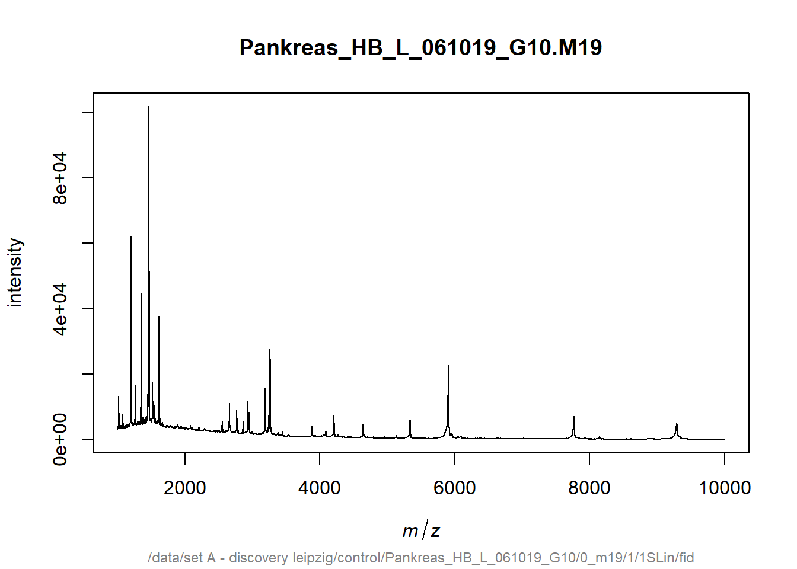
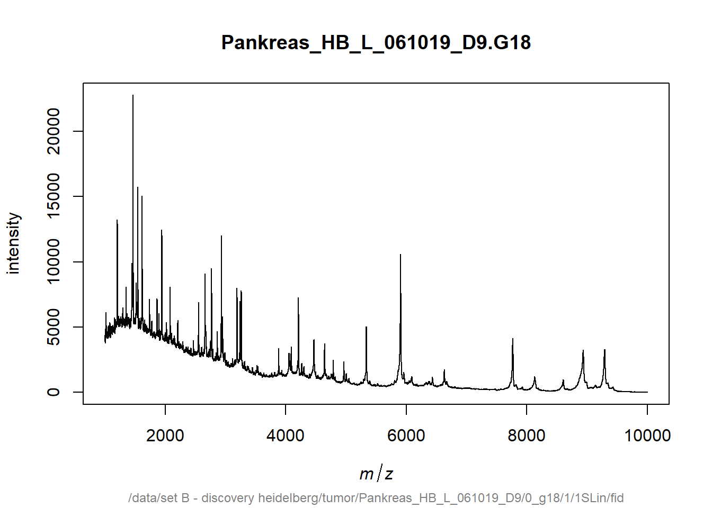
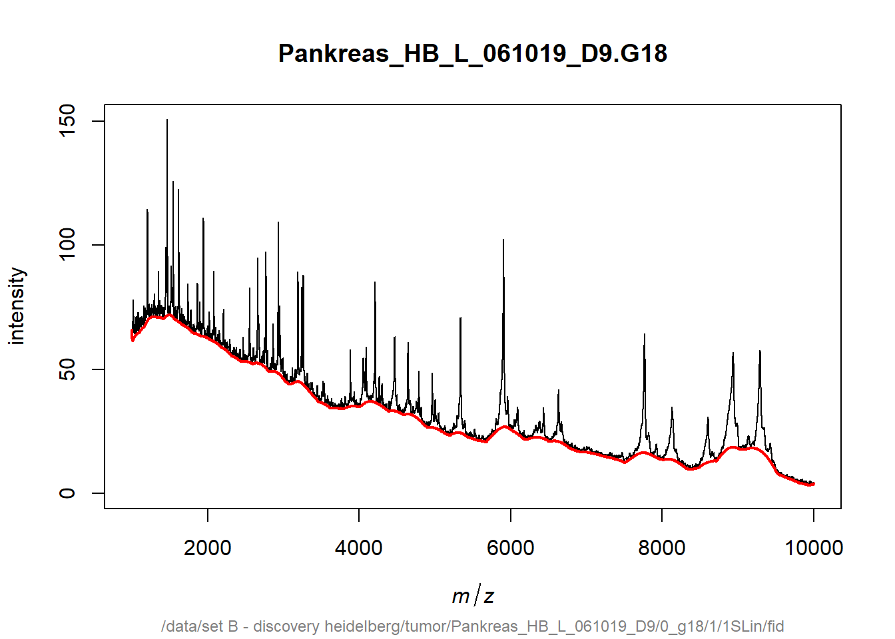
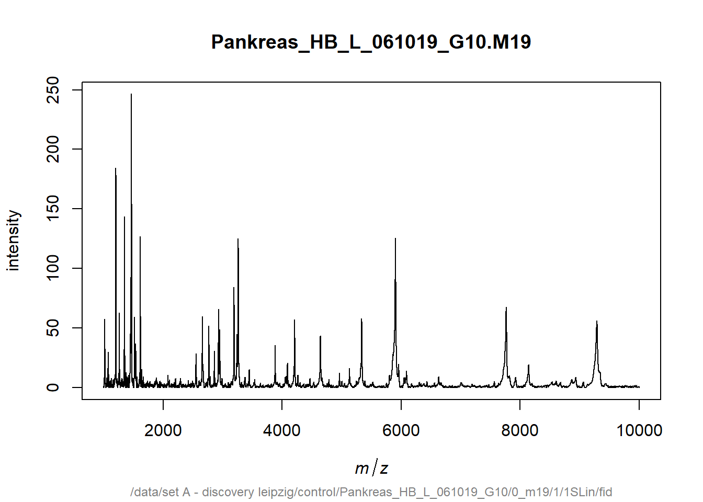
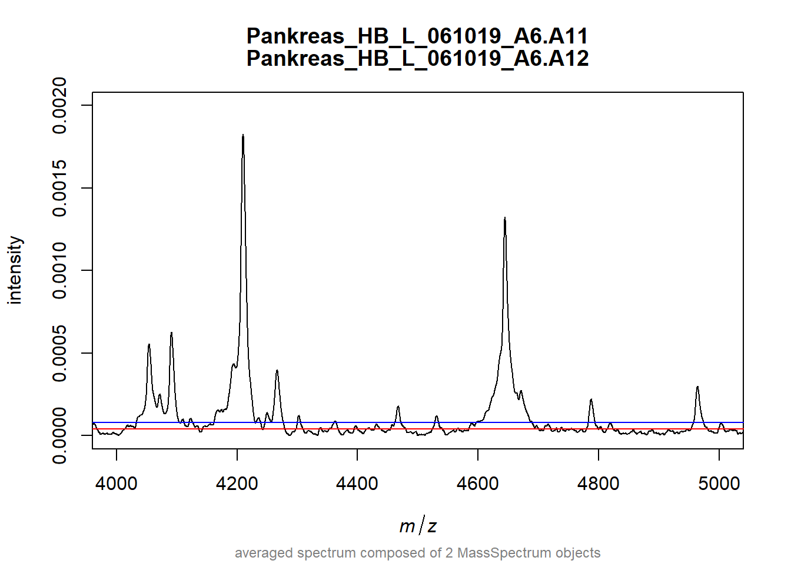
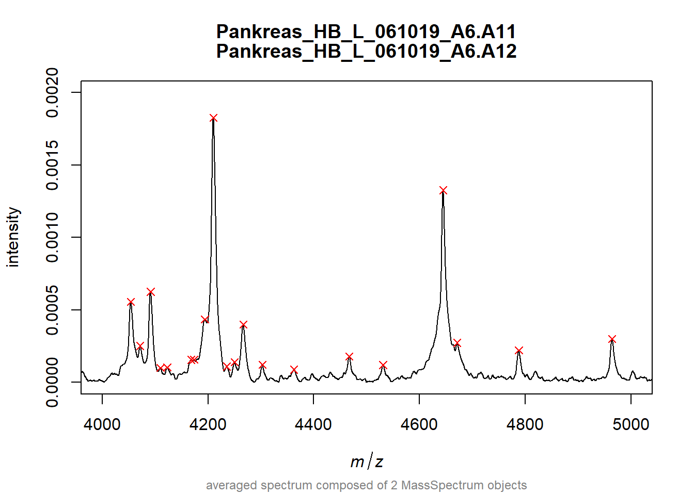

3 MALDIquant
3.1 Intro
Door mijn intresse in bacteriën en virussen heb ik in mijn derde jaar gekozen voor de specialisatie microbiologie. Hierbij moest ik voor een project werken met de bacterie Porphyromonas gingivalis. De bacterie werd hierbij blootgesteld aan verschillende concentraties magnesium en ijzer. Om het effect hiervan te meten op het aantal uitgescheiden outer membrane vesicles (OMV’s), werd er gebruik gemaakt van een fluorescentie microscoop en MALDI-TOF MS.
Voor MALDI-TOF MS data bestaat er een package genaamd MALDIquant, met een complete pipeline voor analyse. Omdat ik de MALDI-TOF MS een interessante techniek vind in de microbiologie, lijkt het me leuk om uit te zoeken hoe deze package werkt. Door op internet informatie te vinden over de package zou ik deze willen toepassen op mijn vorige project om de resultaten die ik toen had en nu heb te vergelijken. Hiermee zou ik in 4 dagen mee kunnen beginnen.
De eerste twee dagen zal ik vooral oefenen met het gebruik van de package. Op internet zijn er verschillende manuals te vinden en die zou ik kunnen doorlopen met fake-data. Vervolgens kan ik proberen of ik de package kan laten runnen op mijn eigen data.
3.2 start
# Installeer de juiste packages
# install.packages(c("MALDIquant", "MALDIquantForeign"))
library(MALDIquant)##
## This is MALDIquant version 1.22.2
## Quantitative Analysis of Mass Spectrometry Data
## See '?MALDIquant' for more information about this package.# MALDIquant objects
s <- createMassSpectrum(mass=1:10, intensity=1:10,
metaData=list(name="Spectrum1"))
s## S4 class type : MassSpectrum
## Number of m/z values : 10
## Range of m/z values : 1 - 10
## Range of intensity values: 1 - 10
## Memory usage : 1.414 KiB
## Name : Spectrum1# importeer voorbeeld data
# subset van MALDI-TOF data van Fiedler et al(2009)
data("fiedler2009subset")
length(fiedler2009subset)## [1] 16## $sPankreas_HB_L_061019_G10.M19.T_0209513_0020740_18
## S4 class type : MassSpectrum
## Number of m/z values : 42388
## Range of m/z values : 1000.015 - 9999.734
## Range of intensity values: 5 - 101840
## Memory usage : 506.359 KiB
## Name : Pankreas_HB_L_061019_G10.M19
## File : /data/set A - discovery leipzig/control/Pankreas_HB_L_061019_G10/0_m19/1/1SLin/fid
##
## $sPankreas_HB_L_061019_G10.M20.T_0209513_0020740_18
## S4 class type : MassSpectrum
## Number of m/z values : 42388
## Range of m/z values : 1000.015 - 9999.734
## Range of intensity values: 6 - 111862
## Memory usage : 506.359 KiB
## Name : Pankreas_HB_L_061019_G10.M20
## File : /data/set A - discovery leipzig/control/Pankreas_HB_L_061019_G10/0_m20/1/1SLin/fid# quality control: alle spectra hetzelfde aantal data punten die niet leeg zijn
any(sapply(fiedler2009subset, isEmpty))## [1] FALSE##
## 42388
## 16## [1] TRUE

## $sPankreas_HB_L_061019_D9.G18.T_0209513_0020740_18
## S4 class type : MassSpectrum
## Number of m/z values : 42388
## Range of m/z values : 1000.015 - 9999.734
## Range of intensity values: 7 - 22786
## Memory usage : 506.367 KiB
## Name : Pankreas_HB_L_061019_D9.G18
## File : /data/set B - discovery heidelberg/tumor/Pankreas_HB_L_061019_D9/0_g18/1/1SLin/fid# variance stabilization
spectra <- transformIntensity(fiedler2009subset,
method = "sqrt")
# smoothing
spectra <- smoothIntensity(spectra, method="SavitzkyGolay",
halfWindowSize=10)
# baseline correction
baseline <- estimateBaseline(spectra[[16]], method="SNIP",
iterations=100)
plot(spectra[[16]])
lines(baseline, col="red", lwd=2)

# normalisatie
spectra <- calibrateIntensity(spectra, method="TIC")
# alignment
spectra <- alignSpectra(spectra,
halfWindowSize=20,
SNR=2,
tolerance=0.002,
warpingMethod="lowess")
samples <- factor(sapply(spectra,
function(x)metaData(x)$sampleName))
avgSpectra <- averageMassSpectra(spectra, labels=samples,
method="mean")
# Peak detectie
noise <- estimateNoise(avgSpectra[[1]])
plot(avgSpectra[[1]], xlim=c(4000, 5000), ylim=c(0, 0.002))
lines(noise, col="red")
lines(noise[,1], noise[, 2]*2, col="blue")
peaks <- detectPeaks(avgSpectra, method="MAD",
halfWindowSize=20, SNR=2)
plot(avgSpectra[[1]], xlim=c(4000, 5000), ylim=c(0, 0.002))
points(peaks[[1]], col="red", pch=4)
# peak binning
peaks <- binPeaks(peaks, tolerance=0.002)
# feature matrix
peaks <- filterPeaks(peaks, minFrequency=0.25)
featureMatrix <- intensityMatrix(peaks, avgSpectra)
head(featureMatrix[, 1:3])## 1011.73182227583 1020.6748082171 1029.40115131151
## [1,] 0.0001894947 0.0007715987 0.0001093035
## [2,] 0.0002144354 0.0015030560 0.0001422394
## [3,] 0.0002117147 0.0004555688 0.0001303326
## [4,] 0.0002314181 0.0005260977 0.0001441254
## [5,] 0.0001562401 0.0024054031 0.0001198008
## [6,] 0.0001600630 0.0020315191 0.0001090484